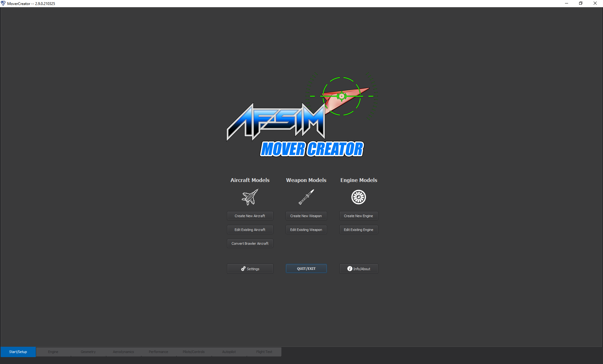
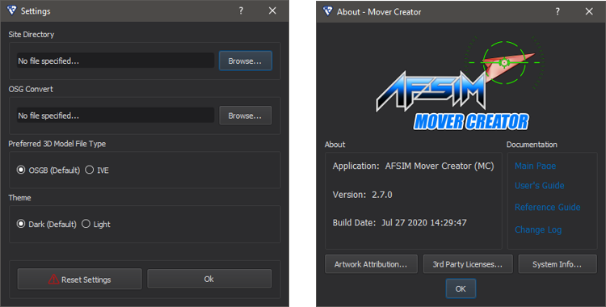
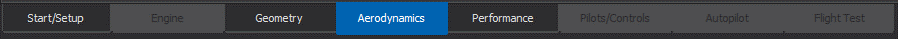

Mover Creator User’s Guide¶
The Mover Creator User’s Guide contains explanations of all Mover Creator features. The content in this guide answers the ‘What is the [blank] feature’ types of questions.
Core Functionality¶
Mover Creator walks the user through the design of their vehicle or engine in a linear, step-by-step process. This process is described in the sections below.
Start Dialog¶
When Mover Creator is first opened, the first page that appears is the Start Dialog, shown below. From here, the user may choose to begin designing an aircraft, a weapon, or an engine. In each of these cases, the user can either create a new model or edit an existing model.
If the user chooses to create a new model, a dialog appears prompting the user to select a type to derive their model from and to enter a name for their new model. For example, selecting “Create New Aircraft” opens the dialog shown below (left side). This will create a new aircraft identical to the derived type. The user may make changes to this new aircraft model without affecting the original derived aircraft. The Mover Creator application comes with a set of templates from which users can derive their vehicle. The naming convention for these templates is a bit cryptic and is explained in the Standard Vehicle Templates page. Selecting “Edit Existing Aircraft” brings up a dialog requesting the aircraft type to be edited (right side of the image below). Any changes will be applied to the aircraft model that is selected. In both dialogs, the “Aircraft Category” drop-down menu is populated with the names of the folders located in \resources\mover_creator\data\Vehicles\Aircraft\. The “Aircraft Type” menu is populated with the names of the .amc files in the folder selected. Near the bottom of the dialog are checkboxes indicating which mover types are to be generated by Mover Creator.

The dialog to convert a WSF_BRAWLER_MOVER aircraft is the odd one out. Rather than constructing a full model component-by-component and sending it through the typical Mover Creator flow, Mover Creator converts the aircraft to a WSF_POINT_MASS_SIX_DOF_MOVER and gives the user the option to carry out further tuning. This flow may become better integrated with Mover Creator in later versions, as support for SixDOF vehicles expands to the point-mass mover model.
On the Start Dialog, to the left of the Quit/Exit button is an Options button. This allows the user to specify directories for the purpose of outputting a 3D model to use in AFSIM scenarios. The theme may also be specified. When the Options button is clicked, a dialog appears (see the image below). The Site Directory refers to the directory where .obj model files will be output. An AFSIM input file containing a model definition block will also be output to this directory. The OSG Convert file is used to convert the model files to the OSGB or IVE format, determined by which one is selected under “Preferred 3D Model File Type”. This file format is generally preferred, but requires the user to download OSG and select the osgconv executable. The theme may be set to either Light or Dark. “Reset Settings” will restore all of the settings in this dialog to defaults. To the right of the Quit/Exit button is an About/Info button. Clicking on this will open a dialog with version information and documentation links.
Application Flow¶
It is recommended that the user start with his or her engine design before moving on to the vehicle design. Once an engine has been selected for creation/modification from the Start Dialog, Mover Creator will open the “Engine” page which contains the Engine Designer. See the Engine Designer page for details of the engine definition process. When the user is content with their engine design, they can begin the design of their vehicle.
Once the user has selected a vehicle to edit or create from the Start Dialog, Mover Creator opens the Geometry page for the selected vehicle. Once the desired geometry is specified, the user may move to the Aerodynamics page. This can be accomplished by clicking on the Aerodynamics tab at the very bottom of the application window (See Figure 5); or alternatively, by clicking on the Next button located in the bottom right portion of the window. The steps to designing a vehicle must be completed in a particular order; therefore, the user may only navigate to the pages immediately before or after the current pages. Each of the pages are explained in detail in the Vehicle Designer and Engine Designer
Once all steps have been completed, Mover Creator outputs the vehicle definition in a format recognizable by the AFSIM library. The generated AFSIM input files contain the definition blocks necessary to define the desired vehicle design. This includes but is not limited to:
P6DOF Mover |
RB6DOF Mover |
PM6DOF Mover |
Guided Mover |
|
|---|---|---|---|---|
Platform Type |
||||
Mover |
||||
Aerodynamics |
||||
Mass |
||||
Propulsion |
sea_level_specific_impulse, vacuum_specific_impulse, sea_level_thrust_table, throttle. |
|||
Controls |
These files will be located in \resources\data\mover_creator\AFSIM_Scripts\.
Vehicle Designer¶
Selecting any of the options related to aircraft or weapons on the Start Dialog launches the Vehicle Designer. This allows the user to define the controls, geometry, and aerodynamics for his or her vehicle. The user may also run performance tests and perform flight tests for the vehicle. Each aspect of the vehicle design has a corresponding page in the Vehicle Designer. These pages include:
In addition to using the Mover Creator GUI to define a vehicle, a user can modify the vehicle’s raw .amc file. The vehicle files (located in \resources\data\mover_creator\Vehicles\) are in the JSON format and are what ultimately get read into the GUI.
Note
The vehicle .amc file is structured in a specific format, and should only be modified by advanced users.
Engine Designer¶
The Engine Designer is launched by selecting “Create New Engine” or “Edit Existing Engine” on the Start Dialog. The Engine Designer looks different for each engine type. Supported types include:
In addition to using the Mover Creator GUI to define an engine, a user can modify the engine’s raw .amc file. The engine files (located in \resources\data\mover_creator\Engines\) are in the JSON format and are what ultimately get read into the GUI.
Note
The engine .amc file is structured in a specific format, and should only be modified by advanced users.